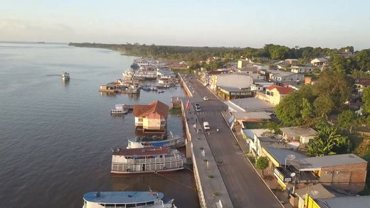

00:00:16.350
Vista aérea da avenida da orla, que acompanha o rio Amazonas, com embarcações atracadas e casas cercadas de árvores.
Orla de Juruti (PA) · confirmado
A abertura situa Juruti no oeste do Pará e anuncia a visita à cidade que recebe o Festribal.
Transcrição · 00:00:11 | 00:00:18 | 00:00:27
Turismo Aqui — quadro de vídeo publicado no YouTube